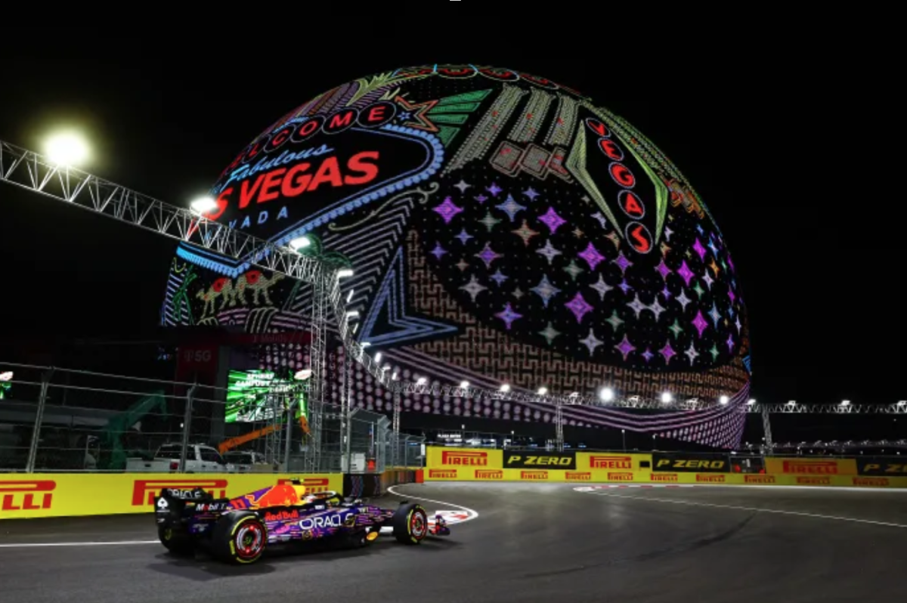

F1 Las Vegas: Helpful or Hurtful?
Madison Beard
November 23rd, 2025

Anyone who has been online in the last year would have heard about the Formula One Las Vegas race. Las Vegas is the entertainment capital of the world, and Formula One is the pinnacle of motorsports. When you combine them, you get the F1 Las Vegas Race. People on social media have been extremely vocal about the immense construction, advertising, and its effect on viewers and residents alike. Let’s take a look at the negative and positive impacts of the presence of Formula One in Las Vegas.
The Downside
Most of the press has focused on the negative aspects of the Las Vegas Grand Prix. Some of the most detrimental include permanent street damage, traffic, construction, and loss of money for neighboring businesses. The re-pavement of roads throughout Las Vegas has caused multiple high-traffic roads to be closed down and resulted in many unhappy residents. Usually, a walk from Treasure Island to Bellagio would take about seven minutes, but now it could take over 20. The Bellagio water fountain, which is their driving money-making feature, has been shut off during the construction of the grandstands on the strip. Sidewalks are unrecognizable as they have been covered with scaffolding and metal. Bridges have been blocked, so onlookers can’t see the race without paying for a ticket. Trees have been cut down, and the Venetian canal has been drained to make room for bleachers. All of these endeavors have put a strain on small businesses in the area, like local gas stations, with fewer people wanting to travel to Las Vegas due to all the construction. This led to workers being laid off. There were also rumors about a potential strike of casino and hospitality workers if their contracts were not renegotiated. Formula One has inconvenienced thousands of citizens in Las Vegas and will have a lasting impact on the strip.
The Upside
Las Vegas has gained so much from Formula One being in town, though. The race had reportedly brought Las Vegas “an estimated economic impact of $1.2 billion,” a race official stated. The Las Vegas Strip greatly benefited from an increase in customers in the area. Most of the hotels on the strip were booked up months in advance due to the anticipation of this race. The Netflix Cup, hosted at the Wynn Golf Club on November 14th, 2023, also helped the anticipation for the Las Vegas Grand Prix. Four teams of F1 drivers and PGA golf tour players teamed up for an ultimate battle of golf. The four teams competed in special challenges like the Squid Game hole, to promote Netflix’s bringing Squid Games to everyday people. The team of Formula One driver Carlos Sainz and PGA Tour professional Justin Thomas won the inaugural competition. Special appearances from Mark Wahlberg, Steve Aoki, and Patrick Mahomes also helped gain more attention for sports and Las Vegas. All of these attempts to promote the race and squeeze as much revenue Formula One could out of this race would help Las Vegas in more ways than one.
Mixed Feelings
Formula One won and lost from gambling on the Las Vegas Grand Prix location. The highs were being able to produce a spectacle of an event that many people, like the CEO of Caesars Entertainment, love. “Las Vegas Grand Prix has set the new standard for Formula 1 racing, and we are glad to have been a part of the event’s immense success. Everything in Las Vegas is larger than life, and the show that the LVGP and the drivers put on this weekend reflected the best of our legendary city.” The Las Vegas Grand Prix also had some hiccups. For example, during the 2023 race on Thursday night, Carlos Sainz drove over a water valve cover that resulted in damaging his car and ending his practice session. This raised concerns for other drivers’ safety. Marshals and other construction personnel had to check the rest of the drain hole covers to ensure that there weren’t any others not secured properly. This then contributed to the cancellation of the 8-minute practice one and a two-hour delay into practice two. All of the 35,000 viewers in Las Vegas were ushered out of the track by security and police. Formula One faced a class action lawsuit for “ breach of contract, negligence, and deceptive trade practices.” To conclude, Formula One has taken some publicity hits, but they have not outweighed Formula One’s efforts to make the most of this unique race.
Lights Out
All things considered, Formula One has had negative and positive effects on Las Vegas and the sport as a whole. It has brought publicity like no other event, but also major concerns that need to be fixed before next year’s race to ensure everyone’s safety. The Formula 1 Heineken Silver Las Vegas Grand Prix 2023 was a success, expanding its range of U.S.-located spectators and making the race stand on its own as one of the more memorable races of the season.
More In News

Secrets Behind the Louvre Heist

COP30: The Globe's 30th Climate Conference

College Polls: Data and Statistics from U.S. Admissions